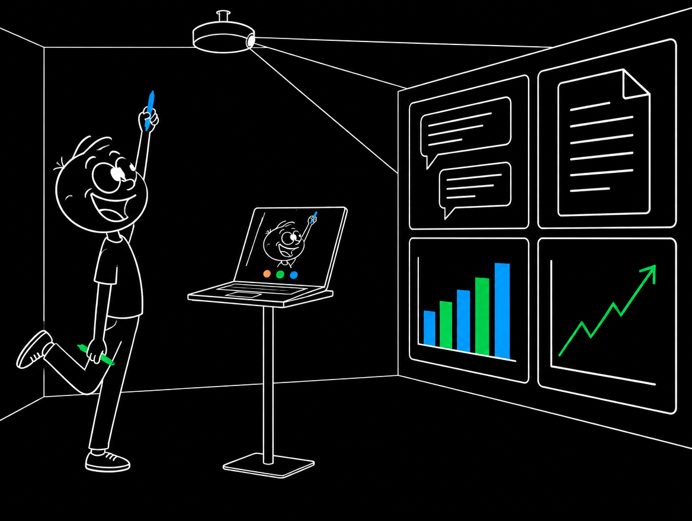
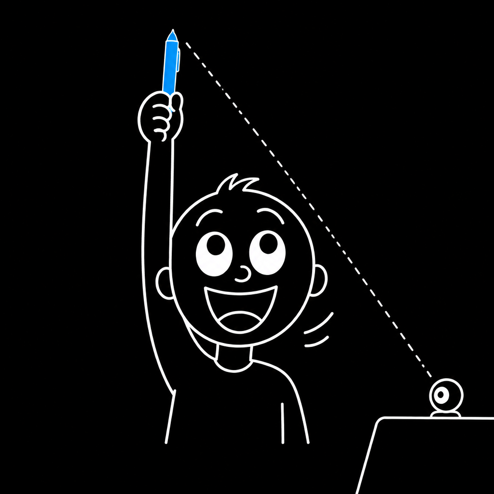
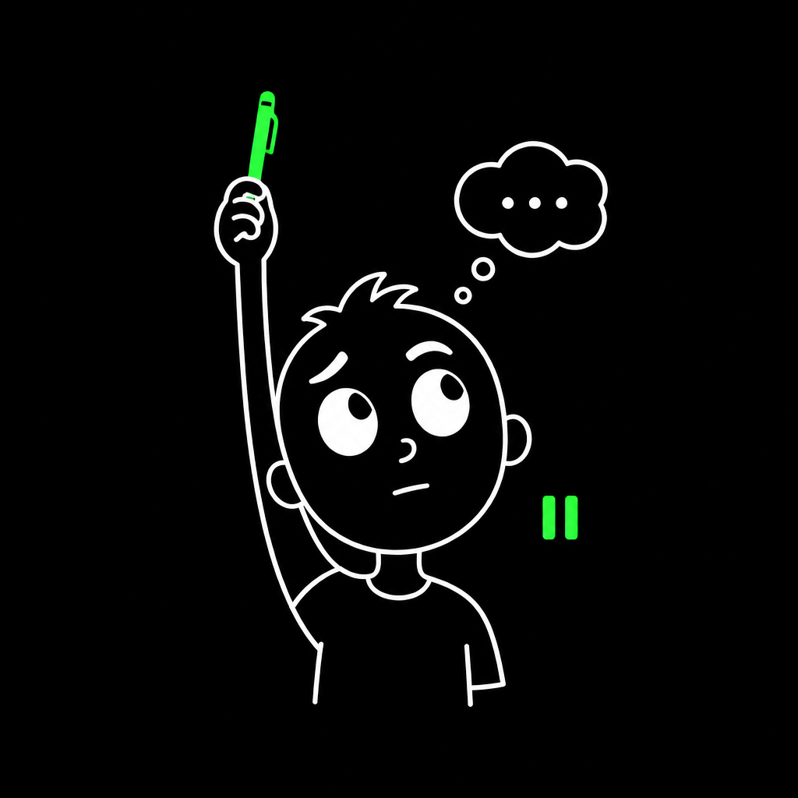
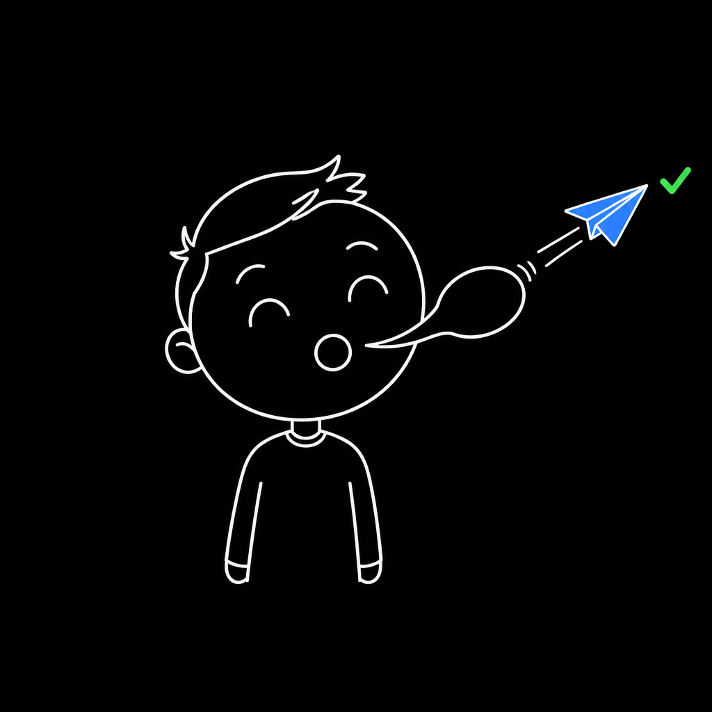
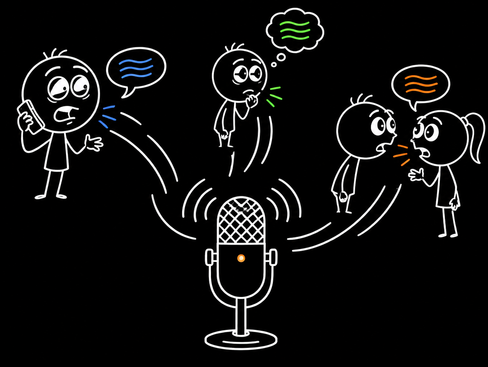
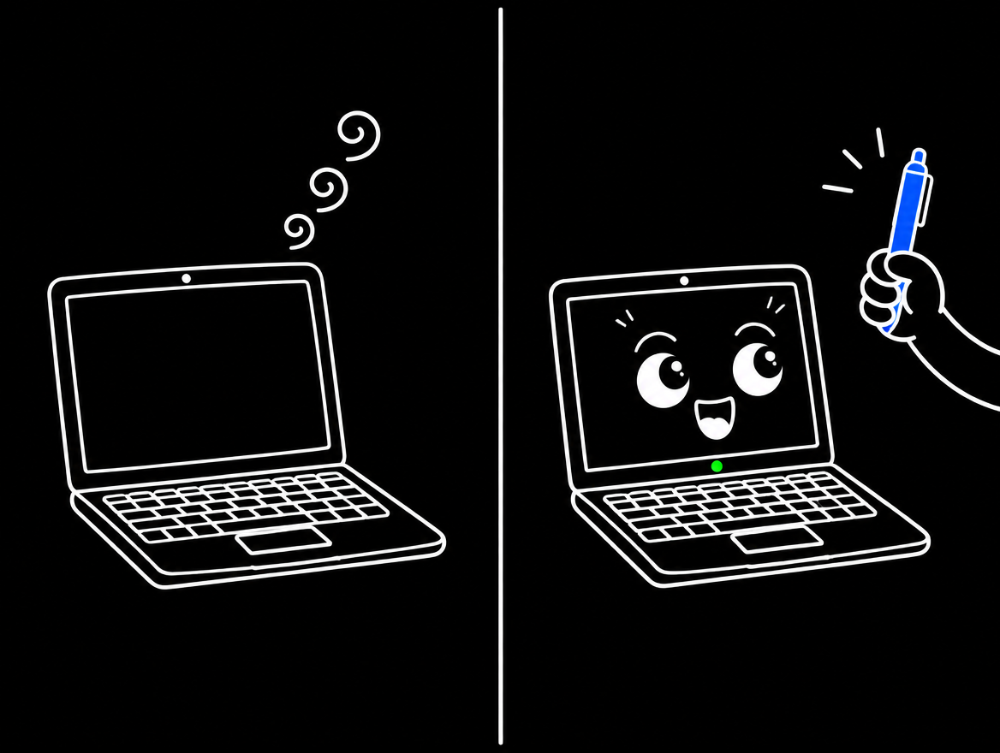
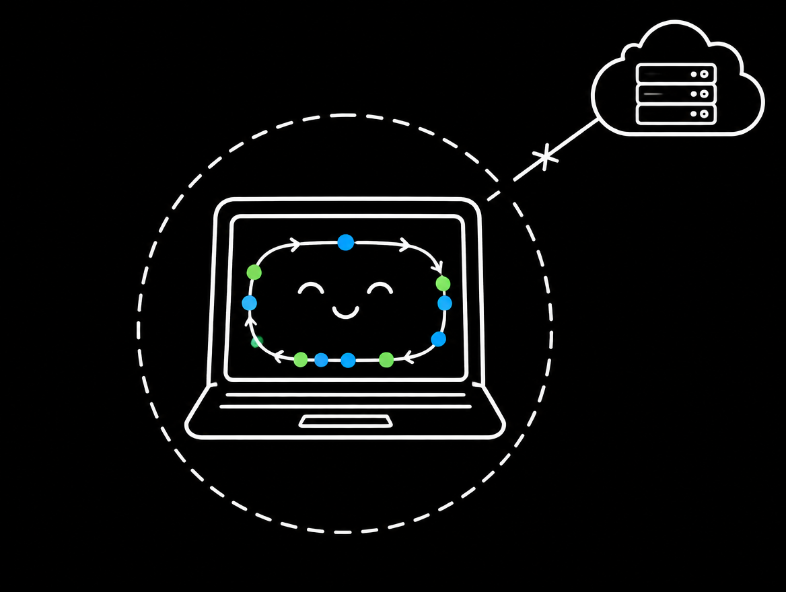
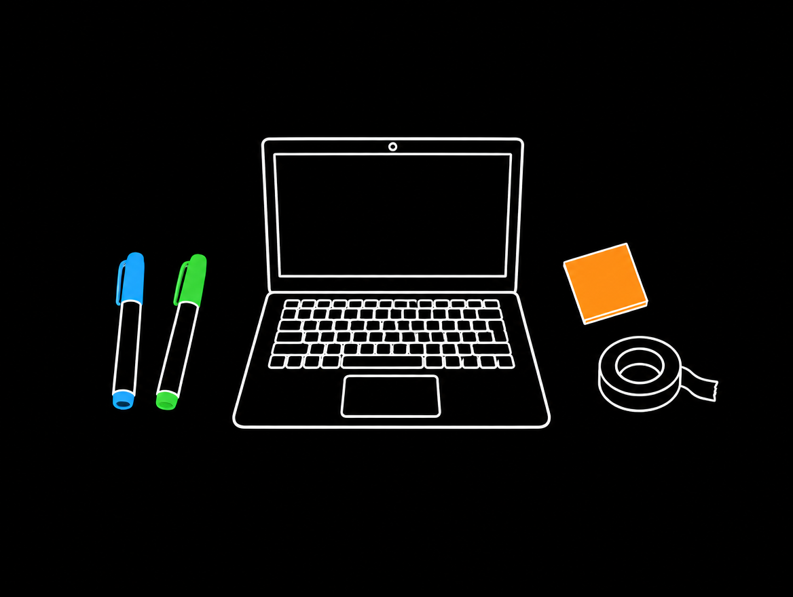

キーボードの前に座らなくていい、というだけの道具です。 色を上げれば、パソコンが聞き始めます。話し終えて「はい」と言えば、その言葉が AIの入力欄にそのまま入って、送られます。 画面をプロジェクターや大きなテレビに映せば、部屋を歩き回りながら、 相手と話すように考えをまとめていけます。

1つめの色を上げるここから聞きます、の合図。一瞬かざすだけでよく、上げ続ける必要はありません。
2つめの色を上げるちょっと待って、の合図。考えこんでも、勝手に送られません。
「はい」と言うこれで送ります。何も言わずに数秒黙っても、同じように送られます。色は自分で決められます。青でも緑でも、紫でも水色でも構いません。 避けるのは肌に近い色だけ（オレンジ・赤・ベージュ）。顔ごと拾ってしまい、動かなくなります。

ひとりごとまで聞かれたくない。「ねえ○○」と呼びかけて始めるタイプの道具は、その一言を聞き逃さないために、 ずっとマイクを開けたままにしています。電話の声も、家族との会話も、その間ずっと通り過ぎていきます。 ColorCue は、色を見せるまで何も聞きません。聞いている間は、画面のランプが緑に光ります。

合図があってから、動きはじめる。呼びかけを待つ仕組みは、待っている間もずっと動き続けます。 ColorCue は合図を見てから動き出します。それまでは、ただカメラに色が映っているかを見ているだけです。 パソコンにも、バッテリーにも負担をかけません。

AIのAPIは使いません。ColorCue はあなたのパソコンの中だけで動く小さなプログラムです。 どこかのサービスに登録して鍵をもらう、といったことは一切ありません。 （声を文字にする部分だけ、Chrome にもとから入っている機能を使います）

ノートパソコンがあれば、始められます。カメラは最初から付いています。合図に使う色は、 ペンでも、付箋でも、マスキングテープでも構いません。 専用の機械やリモコンを買いそろえる必要はありません。
0 / 0 完了
あとは、話したいアプリを手前に出して、入力欄をクリックしてから、色を上げて話すだけです。 パソコンの画面をテレビやプロジェクターに映すと、離れたところからでも使えます。 席に戻らなくていい、というのがこの道具のいちばんの取り柄です。
送る合図の言葉は、変えられます。 画面の「送信の合図」の欄に、好きな言葉をいくつでも書けます。 ふだんの会話で口から出ない言葉にしておくと、うっかり送ってしまうことがありません。
色を使わない「手ぶらモード」もあります。 「手ぶらモードオン」と言うと、色なしでずっと聞くようになります。 ただし部屋の音を拾い続けるので、一人きりの静かな場所でだけ使ってください。 オンの間は、画面に注意書きが流れ続けます。